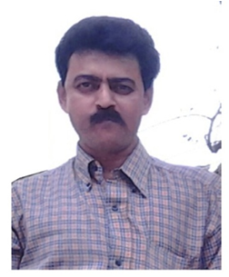
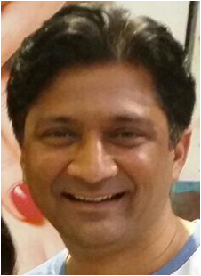
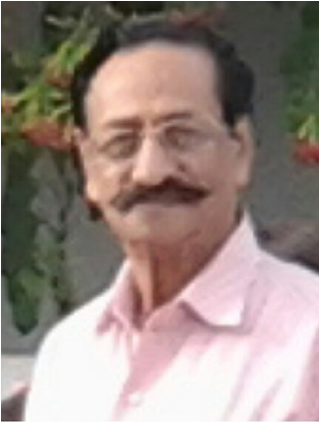
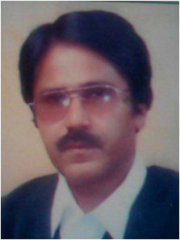

We Are Comming To Guide You

Mr. Ajay K Sharma
Designation and Location
Principal, DPS Bhopal
Brand Ambassador Career Mitra
Awards and Achievement
Awarded the Best Principal Award by Science Olympiad Foundation,New Delhi for the brilliant performance of the students in Madhya Pradesh for the last ten years.
Received ACADEMIC EXCELLENCE AWARD in Recognition of Maintaining Highest Standards
in AISSE & AISSCE Examinations 2008-09 by Gyan Ganga Institute of Technology and
Management.
Felicitated by FIIT-JEE for the Best Performance of the students in Bhopal in FIIT-JEE Talent
Search Examination.
Elected as the President of Sahodaya Group of CBSE Schools of Bhopal.
Recommended by CBSE for National Award for Best Principal for the Session 2009-10.
Recipient of Best Principal Award from FIIT-JEE Bhopal for the brilliant performance of the
students in FIIT-JEE Talent Search Examinations.
Recipient of Best Teacher Award from Lions Club Faridabad.
Recipient of Certificate of Appreciation by APJ Education Society for dedicated service.
Recipient of Best Principal Award by Lions Club Bhopal and Rotary Club Bhopal.

Dr. J S Yadav
Professional Qualification
B.E. (R.D.V.V.,Jabalpur)
M.Tech. (MANIT,Bhopal)
PH.D - Model Order Reduction Using Modern Heuristic Optimization Techniques for Controller Design (MANIT BHOPAL)
Awards and Achievement
Research Publications
International Journal: 14 Nos.
International Conference04 Nos.
National Conferences 05 Nos.
Programs Attended
Summer Schools /Winter Schools 21 Weeks
Seminars/Short Term Courses attended More then 15
Number of B.Tech Projects, M.Tech and Ph.D. thesis supervised
B.Tech. Projects 30 Nos.
M.Tech Dissertations 22 Nos.
Ph.D. thesis 01 awarded and 08 registered

Mr. Puneet Tripathi
Designation and Qualification
Director consultant
Mentoring for Health & nutrition
Professional Qualification
Bachelor of Engineering (Mechanical)
Awards and Achievement
Leadership Development recognition in TCM in China in 2008
Seven Star Badge Award in Nutrition & Health Care from Tianjin Tianshi Biological Development Corporation in 2012
Experience
As a Founder President of an NGO(AENCO) since last 15 years
As a direct sales Consultant for Global Healthcare Giant since 2008.
Practitioner of Electromagnetic Acupuncture & Sujok for the last 10
years.
Attended many international seminars on TCM & Nutrition and
social welfare in china, Singapore, London etc.

Dr. S.N. Rai
Designation and Qualification
Educationist Bhopal
Mentoring for Career Counseling and Administration
Professional Qualification
L.L.B, M. Phil.and Ph.D. in Philosophy
Awards and Achievement
Many prizes,Trophies,Awards for outstanding performance and excellence in the field of Education like :
Jyotirmay Best Principal Award-2011
Rajeev Gandhi Vidya Gold Award -2012
Saraswati Shiksha Ratna Award -2013

Mr. Shashank G. Sharma
Designation and Qualification
Director, VBTC Services LLP (Bhopal M.P.)
Mentoring for Merchant navy
Professional Qualification
MBA Shipping & Logistics
BSc. Nautical Science
Awards and Achievement
2006-2008 : World Tankers Ship management Pte. Ltd.
2009-2010 : Univan Ship management Pvt. Ltd
2010-2010 : Bernhard Schulte Ship management Pvt. Ltd.
2011-2011 : Transocean Shipping Ventures Pvt. Ltd.
2011-2013 : MTMM Ship management Pvt. Ltd.
2013-2014 : Bernhard Schulte Ship management Pvt. Ltd.

Shivi Goyal
Designation and Qualification
International Relations and Social Media Expert (Bhopal M.P.)
Mentoring for Foreign Education, International Relations, Study Abroad Counseling and mentoring for the Exams such as IELTS, PTE, TOEFL & VERBALS FOR GRE, GMAT & SAT and Social Media Management
Professional Qualification
PGDHRM (HRM) from S.C.D.L, Pune, Symbiosis University Pune
PG Diploma in Travels & Tourism Management from SNDT Mumbai University (Second position in University)
BA Hon’s (Psychology) from Jai Narayan Vyas University, Jodhpur (Topped the Dept.)
Awards and Achievement
Recognized as a young writer and pertinent Social Media Expert. Eminently acknowledged for work in Overseas Education.
IELTS
BULATS
TOEFL
IBM Computer Application and Google ADwords
SEO, Content Writing, Blogger

Mr. Gagan Sharma
Designation and Qualification
Production (Electronics)
Mentoring for Start up or Setting new Industries
Professional Qualification
BSC (ELECTRONICS INSTRUMENTAION
Awards and Achievement
Awarded By Multinational company, S EVEREADY UNION CARBIDE LUCKNOW (U.P.) (Torches & securities projects)
Experiencet
Head of R&D, Electronics and Q.C, Production in Sabe International, Bangalore Karnataka

Mr. Aswini Kumar Rao
Designation and Qualification
National Head – S&D [Aircel (Maxis telecom)
Professional Qualification
BSc - Botany (Hons) – Delhi University (1994).
MSc – Environmental Sciences. (IIEE)
MBA – AlgappaUniv (2006).
Phd (Retail Management), – Pursuing. (Completing Dec 2016)
Awards and Achievement
National Appreciation for work on Visual merchandising. (Airtel).
Became certified Airtel Trainer. Have keen interest in training and development.
Conducted trainings (Made modules) for "Induction Batches" in Vodafone.
Certified Visual Merchandiser - Underwent 7 days induction in ‘Visual Merchandising and fashion consultancy” from Pearl academy of fashion. Delhi.
Post graduate diploma in Ecology and environment (IIEE Del– 1998).
Championed the Customer engagement & SSK process, deployment & Compliance audits in Aircel
Strategized the organizational structure in Vodafone, Aircel and Top n Town

Mr.Urvarsh Sharma
Designation and Qualification
M.E. HONS HONG KONG (Electronics)
Mentoring for – Start up or Help for opening new
Industries
Proffesional Qualification
YOGIC DIPLOMA 1970
BUSINESS STUDY CIRCLE
MASTER OF SEREMONIES 1968-69
Awards and Achievement
Awarded by Multinational company, M/S EVEREADY UNION CARBIDE,LUCKNOW (U.P.) (Torches & securities projects

Dr. Arun Kumar Shrivastav
Designation and Qualification
Professor & Hod Pharmacology Gandhi Medical College,(MBBS, M.D, Phd
Mentoring for Educational Technology
Proffesional Qualification
MBBS, M.D, Phd
Awards and Achievement
PhD in yoga verses druggist
Diabetes & in hypertensive patients
Worked as Jt Divisor medical
Education having teaching researching
Teaching Research and Administration For 25 Years
Experience
Teaching Research and Administration For 25 Years
For any questions email :-
ask@careermitra.info